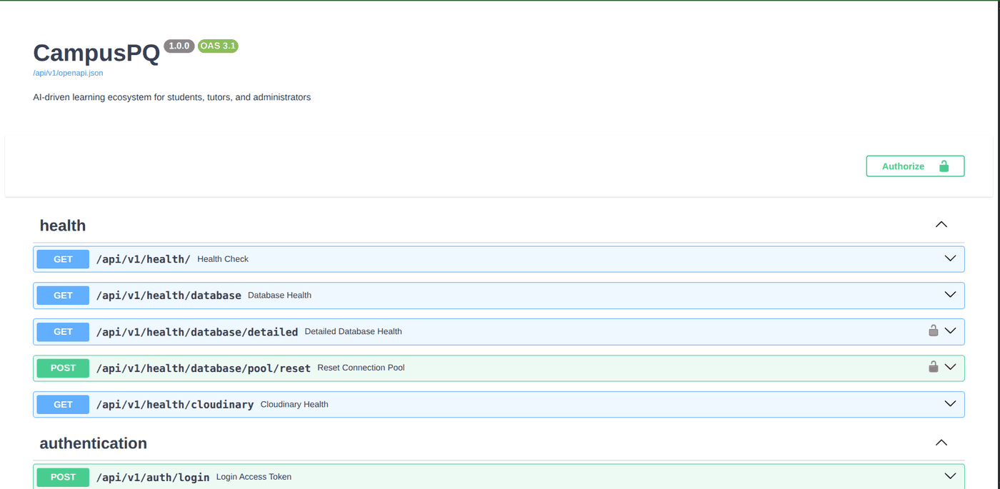

Machine Learning Engineer · Production LLM Systems · Lagos, Nigeria
Yuguda Muhammed.
I build models that survive production — LLM reasoning agents, retrieval over messy real data, and the serving and evaluation layers that keep them honest once real users show up.
Selected work
Production ML systems, and the research builds behind them.


What I do
The full lifecycle — data and modelling through serving, evaluation and monitoring.
LLM & agent systems
Reasoning systems that survive contact with messy input and real users.
- Multi-step agents — LangChain, LangGraph, CrewAI
- RAG, embeddings and semantic retrieval
- Prompt optimisation and output validation
- Open-weight models served locally (Gemma, vLLM)
Training & evaluation
Fitting the model, and — the harder part — knowing whether it actually works.
- PyTorch, Hugging Face Transformers, scikit-learn
- Transformers, LSTMs, CNNs, classical ML
- Evaluation benchmarks and repeatable scoring
- Computer vision, OCR and multimodal fusion
ML infrastructure
The unglamorous layer that decides whether a model ever reaches anyone.
- FastAPI inference APIs, JSON contracts, OpenAPI
- Qdrant, ChromaDB, pgvector, PostgreSQL, Redis
- Docker, Kubernetes, GitHub Actions CI/CD, AWS & GCP
- Latency monitoring, model and dataset versioning
Experience
Lead AI Engineer
- Lead design and delivery of an end-to-end production LLM system applying multi-step reasoning agents over structured data, served via FastAPI on AWS.
- Drove output quality from 30% to 90%+ through iterative model evaluation, prompt optimisation and structured output validation.
- Built ingestion, preprocessing, embedding and semantic-retrieval pipelines over noisy real-world data, with explicit handling for edge cases and failure modes.
- Engineered for ~100 concurrent users: Redis caching, horizontal scaling, latency monitoring.
LLM Agent Trainer & Evaluator
- Defined evaluation criteria and quality-assured structured LLM outputs for correctness, reasoning quality and schema compliance.
- Applied prompt engineering and data refinement to improve model reasoning accuracy.
AI / Backend Engineer
- Built RAG-powered analysis pipelines and semantic retrieval systems using LLMs as a reasoning layer over structured data.
- Improved vector retrieval performance by 30% via embedding-model evaluation, dataset-quality work and ChromaDB / Qdrant tuning.
- Shipped RESTful JSON APIs for model operationalisation, with fallback behaviour for provider failure.
B.Sc. Physics
- A physics background underpins the quantitative rigour, systems thinking and methodical documentation behind applied ML work.
More projects
Research builds, applied experiments, and the systems work underneath them.
Let's build something that ships.
Open to machine learning and AI engineering roles, remote or hybrid.